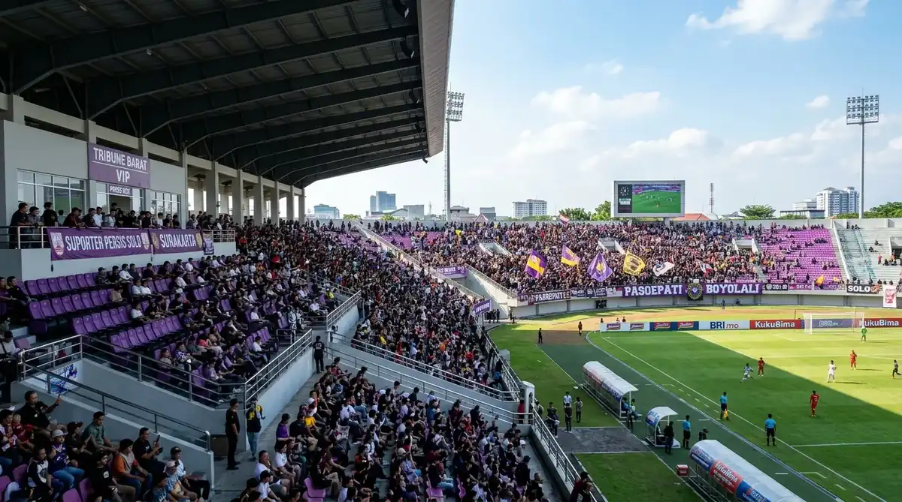

Daftar Isi Artikel
- Kanal Penjualan Tiket Persik yang Tercatat Resmi
- Harga Tiket Persik Kediri per Kategori Pertandingan
- Langkah Membeli Tiket Persik Secara Online dan Offline
- Pemesanan Tiket Persik melalui Kediri Event
- Tips Menghindari Calo dan Tiket Palsu
- Apakah Tiket Cepat Habis?
- Pertanyaan yang Sering Diajukan (FAQ)
Kediri Event — Tiket laga kandang Persik Kediri pada musim lalu dijual melalui BRImo, komunitas suporter Persik, dan loket on the spot di Store Persik Kediri, dengan harga resmi 2025/26 mulai Rp35 ribu untuk kelas ekonomi, sehingga kanal dan harga musim 2026/27 perlu dikonfirmasi ke panpel sebelum membeli.
Ringkasan Inti Panduan Tiket Persik:
- Kanal Distribusi Resmi: Penjualan tiket resmi meliputi aplikasi BRImo, alokasi komunitas suporter, dan loket on the spot Store Persik Kediri.
- Tiga Bobot Pertandingan: Harga tiket dibagi berdasarkan kategori normal match, big match, dan super big match.
- Harga Terjangkau: Tarif resmi dimulai dari Rp35 ribu untuk kelas ekonomi pada pertandingan normal.
- Verifikasi Berkala: Kebijakan tiket musim 2026/27 diperbarui panpel tiap pekan jelang pertandingan kandang.
- Keamanan Transaksi: Membeli lewat jalur resmi dan menyimpan barcode e-ticket adalah cara paling efektif menghindari calo.
Kanal Penjualan Tiket Persik yang Tercatat Resmi
BRImo, komunitas suporter Persik Kediri, dan penjualan on the spot di Store Persik Kediri adalah tiga kanal penjualan tiket resmi yang dilaporkan panpel pada laga kandang musim lalu.
- Aplikasi BRImo: Digunakan sebagai kanal penjualan digital utama untuk suporter umum pada laga kandang musim 2025/26.
- Komunitas Suporter Persik Kediri: Menyalurkan alokasi kuota tiket khusus langsung kepada anggota tribun dan suporter militan.
- Store Persik Kediri: Loket resmi dibuka untuk penjualan on the spot bagi penonton yang datang langsung membeli tiket fisik.
- Situs Resmi Klub: Pada awal musim 2025/26, panpel juga sempat menyediakan pemesanan online melalui laman web resmi klub.
Karena kanal dan kuota tiket dapat disesuaikan pada setiap pertandingan, pastikan Anda selalu membaca rilis pengumuman resmi panpel pada pekan pertandingan yang ingin Anda hadiri.
Harga Tiket Persik Kediri per Kategori Pertandingan
Harga tiket Persik dibagi menjadi tiga bobot pertandingan dan tiga kelas tribun, dengan harga termurah Rp35 ribu pada normal match musim 2025/26, hasil kesepakatan manajemen klub dan komunitas suporter.
| Kategori Pertandingan | Tribun Ekonomi | Tribun Utama | Tribun VIP |
|---|---|---|---|
| Normal Match Laga Reguler |
Rp35.000 | Rp50.000 | Rp65.000 |
| Big Match Lawan Tim Papan Atas |
Rp50.000 | Rp65.000 | Rp100.000 |
| Super Big Match Laga Klasik & Derby |
Rp65.000 | Rp75.000 | Rp100.000 |

Suasana tribun Stadion Brawijaya: tribun ekonomi terbuka, tribun utama, dan VIP tertutup beratap.
Harga di atas diumumkan pada awal musim 2025/26. Pada laga bergengsi melawan Persija Jakarta di akhir musim tersebut, panpel menetapkan penyesuaian tiket menjadi Rp60 ribu (ekonomi), Rp80 ribu (utama), dan Rp100 ribu (VIP), tanpa kenaikan dari laga penting sebelumnya. Harga resmi kompetisi 2026/27 akan kami perbarui setelah panpel merilis daftar definitif.
Langkah Membeli Tiket Persik Secara Online dan Offline
Memilih laga, memastikan kanal resmi, membayar sesuai harga yang diumumkan, dan menyimpan e-ticket atau tiket fisik adalah empat langkah membeli tiket Persik dengan aman:
- Pilih Laga dan Kategori Pertandingan: Tentukan jadwal laga kandang yang ingin ditonton di Stadion Brawijaya serta periksa bobot pertandingannya (normal, big match, atau super big match).
- Pastikan Memilih Kanal Resmi: Pastikan kanal penjualan yang Anda gunakan tercantum dalam pengumuman resmi panpel klub atau media informasi terpercaya.
- Lakukan Pembayaran Resmi: Bayar sesuai harga resmi yang telah ditetapkan dan simpan bukti transaksi sampai hari pertandingan.
- Simpan E-Ticket untuk Pindai di Gate: Simpan barcode e-ticket di galeri smartphone Anda atau simpan tiket fisik Anda, lalu siapkan saat proses pemeriksaan di pintu masuk stadion.
Untuk pembelian langsung (on the spot), datanglah lebih awal ke Store Persik Kediri karena kuota tiket fisik di lokasi terbatas dan dapat habis sewaktu-waktu.
Pemesanan Tiket Persik melalui Kediri Event
Kediri Event membantu informasi dan pemesanan tiket pertandingan Persik melalui admin WhatsApp, dengan e-ticket dikirimkan langsung ke email dan WhatsApp pembeli.
- Hubungi Admin: Tanyakan ketersediaan kuota tribun pada pertandingan kandang yang Anda inginkan.
- Konfirmasi Detail: Pastikan metode pembayaran dan pilihan kelas tribun sebelum menyelesaikan transaksi.
- Terima E-Ticket Instan: Dapatkan kode barcode resmi di ponsel Anda, lalu tunjukkan kepada petugas saat memasuki gate Stadion Brawijaya.
Ketersediaan alokasi tiket melalui Kediri Event dapat berbeda untuk setiap laga, sehingga konfirmasi ke admin beberapa hari sebelum laga sangat dianjurkan.
Tips Menghindari Calo dan Tiket Palsu
Membeli hanya melalui kanal yang diumumkan resmi, mencocokkan harga dengan pengumuman panpel, dan tidak mentransfer ke rekening pribadi tanpa verifikasi adalah tiga tips utama menghindari calo dan tiket palsu.
- Cek Pengumuman Panpel: Kanal resmi selalu dipublikasikan klub; tawaran tiket di luar pengumuman resmi patut dicurigai.
- Waspadai Harga Mark-Up: Tawaran harga tiket yang melambung tinggi jauh di atas tarif resmi merupakan indikasi calo liar.
- Hindari Transfer Rekening Pribadi: Jangan melakukan transaksi ke rekening perorangan tanpa identitas jelas demi menghindari modus penipuan tiket online.
Apakah Tiket Cepat Habis?
Pada laga kandang melawan Madura United 9 Oktober 2026, stadion hanya terisi sekitar 26 persen atau dihadiri 2.307 penonton, sehingga laga biasa belum tentu langsung cepat habis, sementara laga besar tetap berpotensi dipadati puluhan ribu suporter.
Data ini menunjukkan tiket laga normal umumnya masih tersedia mendekati hari pertandingan, tetapi big match melawan tim papan atas dapat berbeda drastis. Membeli lebih awal tetap lebih aman, terutama bagi penonton yang mengincar tiket VIP dan tribun utama beratap.
Pertanyaan yang Sering Diajukan (FAQ)

Ditulis oleh: Erlang Sinatrya Putra Yusya
Event Content Specialist & EditorSpesialis panduan tiket suporter, liputan sepak bola lokal, dan agenda olahraga di Kediri Event. Berdedikasi menghadirkan panduan pembelian tiket yang akurat, aman, dan transparan.
Profil Kediri Event